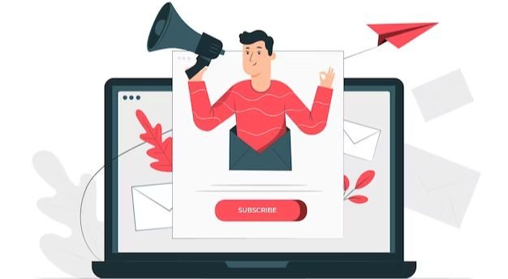
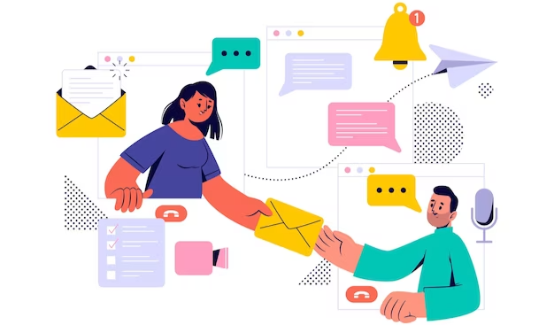

The Right Email Sending Service For Your Business
As a business owner, you know that email is a vital part of your communication strategy. You also know that finding the right email sending service is essential to your success. With so many options on the market, it can be difficult to know which one is right for your business. To find out more about email sending service, visit a webpage.
Email is a critical part of doing business in the modern world. It’s how you stay in touch with customers, vendors, and partners. In many cases, it’s also how you market your products and services. That’s why finding the right email sending service is essential to the success of your business.
Email marketing
Marketing your products or service(s) by email may be a quick, convenient, and cost-effective way of reaching new customers and retaining past customers. Email marketing will let you create relevant, personalized messages, which can enable you to form real connections with your clients.

Email marketing services should come with limits. Since they can't change marketing emails unless they're essential, people with habit disorder are already likely annoyed.
Advantages Of Email Marketing
- Cost- effective: the costs of email marketing can be much lower than many other forms of marketing. There are no advertising fees, printing or media space costs.
- Permission-based: your marketing list will be made up of people who have actively chosen to receive email communications from you. Customers who are genuinely interested in your products and/or services are more likely to engage with your business.
- Flexible design: you can send plain text, graphics or attach files - whichever suits your message best. A choice of design options gives you scope to convey your business branding.
- Scalable: email marketing can be utilized to easily reach large audiences or smaller target audiences. Personalization and segmentation - with email marketing, you can personalize and visual messages. You can also segment your advertising email list, so that your clients are informed of your communications when they have an interest in it - this will boost your engagement with these clients.
- Conversion: as well as sales, increases with a new promotion. Email marketing is also effective at every stage of the buyer's cycle. For instance, you can influence someone to choose your product, foster the client relationship after the purchase, and encourage future transactions.
Types Of Emails In An Email Marketing Campaign:

There are many ways brands and businesses can use email marketing services. Here are some types of email messages you can send to consumers:
- Newsletters: An email newsletter is sent on a regular periodic basis, typically weekly or monthly, and is a good way to keep customers informed about your business.
- Promotional emails: Many customers use these notifications to learn about upcoming sales. They may be sent in advance or during the sale.
- Invitation emails: This type of message keeps clients updated on special events. You can send invitation emails weeks or days before an event to encourage customers to attend.
- Catalog emails: You can send these messages to highlight your products or services.
- Lead-nurturing emails: Designed to spark consumer interest, these emails are sent regularly to your target audience until a potential customer is converted into a paying customer.
- Survey emails: You can send questionnaires to learn more about your customers’ needs, wants, suggestions and satisfaction.
- Transactional emails: You send transactional emails after a customer makes a purchase to confirm the transaction, say thank you and encourage the customer to shop with you again.
In summary, If you are the owner of a small business who is looking for an email marketing service, then sendinblue is the perfect choice for you. First, because it is more affordable and flexible. Second, because it is easy to use and comes with a lot of features. Third, because it offers a good bounce rate, a good deliverability rate, and it has a good reputation among customers and email marketing service providers. Last but not least, it has a good support team.